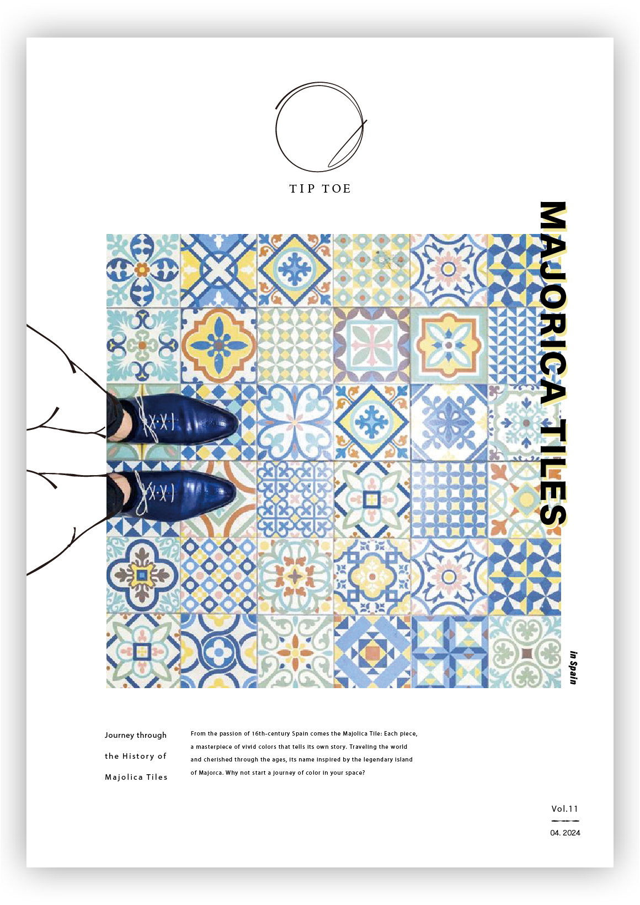

The design of this magazine focuses on Majolica tiles, originating from Mallorca Island in Spain. The articles delve into the rich history of Majolica tiles and their integration into modern design. The design is educational and engaging, appealing to tile enthusiasts and general readers interested in design alike.
Front Page
Main Page
Software
Illustrator / Photoshop
Design
The design of this magazine emphasizes showcasing the Majolica tiles originating from Mallorca Island. It features soft background colors to highlight the beauty of the tiles. The visuals are boldly scattered across the pages, adding dynamism to the layout. To aid comprehension, lengthy texts have been distributed across different topics, making the content more reader-friendly and accessible.